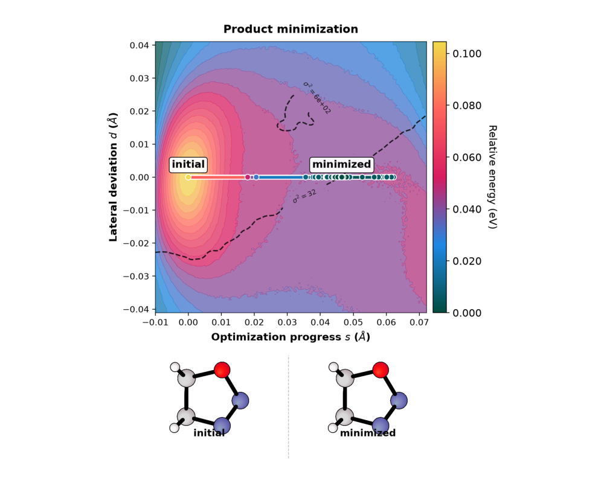
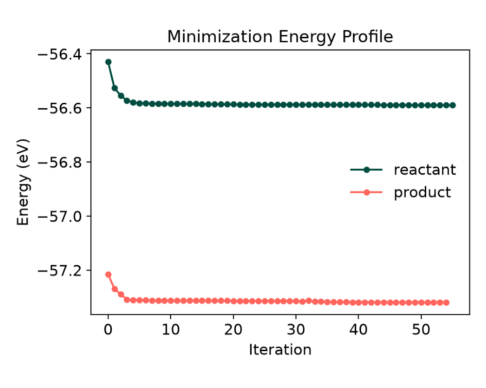
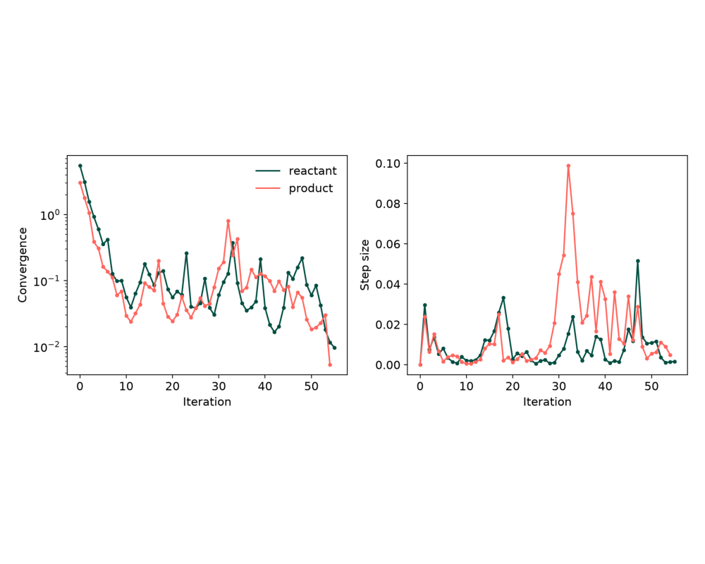
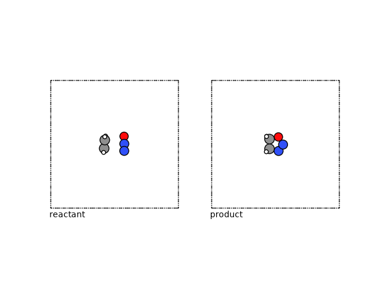

Note
Go to the end to download the full example code.
Finding Reaction Paths with eOn and a Metatomic Potential¶
- Authors:
Rohit Goswami @HaoZeke, Hanna Tuerk @HannaTuerk, Arslan Mazitov @abmazitov, Michele Ceriotti @ceriottim
This example describes how to find the reaction pathway for oxadiazole formation from N₂O and ethylene. We will use the PET-MAD metatomic model to calculate the potential energy and forces.
The primary goal is to contrast a standard Nudged Elastic Band (NEB) calculation using the atomic simulation environment (ASE) with more sophisticated methods available in the eOn package. For even a relatively simple reaction like this, a basic NEB implementation can struggle to converge or may time out. We will show how eOn’s advanced features, such as energy-weighted springs and mixing in single-ended dimer search steps, can efficiently locate and refine the transition state along the path.
Our approach will be:
Set up the PET-MAD metatomic calculator.
Use ASE to generate an initial IDPP reaction path.
Illustrate the limitations of a standard NEB calculation in ASE.
Refine the path and locate the transition state saddle point using eOn’s optimizers, including energy-weighted springs and the dimer method.
Visualize the final converged pathway.
Demonstrate endpoint relaxation with eOn
Importing Required Packages¶
First, we import all the necessary python packages for this task.
By convention, all import
statements are at the top of the file.
import os
import sys
from contextlib import chdir
from pathlib import Path
import ase.io as aseio
import ira_mod
import matplotlib.image as mpimg
import matplotlib.pyplot as plt
import numpy as np
import readcon
from ase.mep import NEB
from ase.optimize import LBFGS
from ase.visualize import view
from ase.visualize.plot import plot_atoms
from metatomic_ase import MetatomicCalculator
from atomistic_cookbook_utils import run_command
from rgpycrumbs.eon.helpers import write_eon_config
from rgpycrumbs.run.jupyter import run_command_or_exit
def write_con(path, atoms_or_list):
"""Write ASE atoms via readcon (con_spec_version=2 metadata path).
eOn 2.16+ uses readcon-core for all CON I/O. Prefer the same stack when
writing endpoints/path images so rgpycrumbs/chemparseplot see a single
metadata-native format.
"""
path = Path(path)
items = (
atoms_or_list if isinstance(atoms_or_list, (list, tuple)) else [atoms_or_list]
)
frames = [readcon.ConFrame.from_ase(atoms) for atoms in items]
readcon.write_con(str(path), frames)
return path
# sphinx_gallery_thumbnail_number = 4
Obtaining the Foundation Model - PET-MAD¶
PET-MAD is an instance of a point edge transformer model trained on
the diverse MAD dataset
which learns equivariance through data driven measures
instead of having equivariance baked in [1]. In turn, this enables
the PET model to have greater design space to learn over. Integration in
Python and the C++ eOn client occurs through the metatomic software [2],
which in turn relies on the atomistic machine learning toolkit build
over metatensor. Essentially using any of the metatomic models involves
grabbing weights off of HuggingFace and loading them with
metatomic before running the
engine of choice.
repo_id = "lab-cosmo/upet"
tag = "v1.5.0"
url_path = f"models/pet-mad-xs-{tag}.ckpt"
fname = Path(f"models/pet-mad-xs-{tag}.pt")
url = f"https://huggingface.co/{repo_id}/resolve/main/{url_path}"
fname.parent.mkdir(parents=True, exist_ok=True)
run_command(f"mtt export {url} -o {fname}")
print(f"Successfully exported {fname}.")
Successfully exported models/pet-mad-xs-v1.5.0.pt.
Nudged Elastic Band (NEB)¶
Given two known configurations on a potential energy surface (PES), often one wishes to determine the path of highest probability between the two. Under the harmonic approximation to transition state theory, connecting the configurations (each point representing a full molecular structure) by a discrete set of images allows one to evolve the path under an optimization algorithm, and allows approximating the reaction to three states: the reactant, product, and transition state.
The location of this transition state (≈ the point with the highest energy along this path) determines the barrier height of the reaction. This saddle point can be found by transforming the second derivatives (Hessian) to step along the softest mode. However, an approximation which is free from explicitly finding this mode involves moving the highest image of a NEB path: the “climbing” image.
Mathematically, the saddle point has zero first derivatives and a single negative eigenvalue. The climbing image technique moves the highest energy image along the reversed NEB tangent force, avoiding the cost of full Hessian diagonalization used in single-ended methods [3].
Concretely, in this example, we will consider a reactant and product state, for oxadiazole formation, namely N₂O and ethylene.
reactant = aseio.read("data/min_reactant.con")
product = aseio.read("data/min_product.con")
We can visualize these structures using ASE.
fig, (ax1, ax2) = plt.subplots(1, 2)
plot_atoms(reactant, ax1, rotation=("-90x,0y,0z"))
plot_atoms(product, ax2, rotation=("-90x,0y,0z"))
ax1.text(0.3, -1, "reactant")
ax2.text(0.3, -1, "product")
ax1.set_axis_off()
ax2.set_axis_off()

Endpoint minimization¶
For finding reaction pathways, the endpoints should be minimized. We provide initial configurations which are already minimized, but in order to see how to relax endpoints with eOn, please have a look at the end of this tutorial.
Initial path generation¶
To begin an NEB method, an initial path is required, the optimal construction of which still forms an active area of research. The simplest approximation to an initial path for NEB methods linearly interpolate between the two known configurations building on intuition developed from “drag coordinate” methods. This may break bonds or otherwise also unphysically pass atoms through each other, similar to the effect of incorrect permutations. To ameliorate this effect, the NEB algorithm is often started from the linear interpolation but then the path is optimized on a surrogate potential energy surface, commonly something cheap and analytic, like the IDPP (Image dependent pair potential, [5]) which provides a surface based on bond distances, and thus preventing atom-in-atom collisions.
Here we use the IDPP from ASE to setup the initial path. You can find more information about this method in the corresponding ASE tutorial or in the original IDPP publication [5]. A brief pedagogical discussion of the transition state methods may be found on the Rowan blog, though the software is proprietary there.
N_INTERMEDIATE_IMGS = 10
# total includes the endpoints
TOTAL_IMGS = N_INTERMEDIATE_IMGS + 2
images = [reactant]
images += [reactant.copy() for _ in range(N_INTERMEDIATE_IMGS)]
images += [product]
neb = NEB(images)
neb.interpolate("idpp")
/home/runner/work/atomistic-cookbook/atomistic-cookbook/.nox/eon-pet-neb/lib/python3.13/site-packages/ase/mep/neb.py:329: UserWarning: The default method has changed from 'aseneb' to 'improvedtangent'. The 'aseneb' method is an unpublished, custom implementation that is not recommended as it frequently results in very poor bands. Please explicitly set method='improvedtangent' to silence this warning, or set method='aseneb' if you strictly require the old behavior (results may vary). See: https://gitlab.com/ase/ase/-/merge_requests/3952
warnings.warn(
We don’t cover subtleties in setting the number of images, typically too many intermediate images may cause kinks but too few will be unable to resolve the tangent to any reasonable quality.
For eOn, we write the initial path to a file called idppPath.dat.
output_dir = Path("path")
output_dir.mkdir(exist_ok=True)
output_files = [output_dir / f"{num:02d}.con" for num in range(TOTAL_IMGS)]
for outfile, img in zip(output_files, images, strict=True):
write_con(outfile, img)
print(f"Wrote {len(output_files)} IDPP images to '{output_dir}/' (readcon).")
summary_file = Path("idppPath.dat")
summary_file.write_text("\n".join(str(f.resolve()) for f in output_files) + "\n")
print(f"Wrote absolute paths to '{summary_file}'.")
Wrote 12 IDPP images to 'path/' (readcon).
Wrote absolute paths to 'idppPath.dat'.
Running NEBs¶
We will now consider actually running the Nudged Elastic Band with different codes.
ASE and Metatomic¶
We first consider using metatomic with the ASE calculator.
# define the calculator
def mk_mta_calc():
return MetatomicCalculator(
fname,
device="cpu",
non_conservative=False,
uncertainty_threshold=0.001,
)
# set calculators for images
ipath = [reactant] + [reactant.copy() for _ in range(10)] + [product]
for img in ipath:
img.calc = mk_mta_calc()
print(img.calc._model.capabilities().outputs)
neb = NEB(ipath, climb=True, k=5, method="improvedtangent")
neb.interpolate("idpp")
# store initial path guess for plotting
initial_energies = np.array([img.get_potential_energy() for img in ipath])
# setup the NEB calculation
optimizer = LBFGS(neb, trajectory="A2B.traj", logfile="opt.log")
conv = optimizer.run(fmax=0.01, steps=100)
print("Check if calculation has converged:", conv)
if conv:
print(neb)
final_energies = np.array([img.get_potential_energy() for img in ipath])
# Plot initial and final path
plt.figure(figsize=(8, 6))
# Initial Path (Blue)
plt.plot(
initial_energies - initial_energies[0],
"o-",
label="Initial Path (IDPP)",
color="xkcd:blue",
)
# Final Path (Orange)
plt.plot(
final_energies - initial_energies[0],
"o-",
label="Optimized Path (LBFGS)",
color="xkcd:orange",
)
# Metadata
plt.xlabel("Image number")
plt.ylabel("Potential Energy (eV)")
plt.legend()
plt.grid(True, alpha=0.3)
plt.title("NEB Path Evolution")
plt.show()

/home/runner/work/atomistic-cookbook/atomistic-cookbook/.nox/eon-pet-neb/lib/python3.13/site-packages/metatomic/torch/model.py:74: UserWarning: the 'non_conservative_forces' output name is deprecated, please update the model to use 'non_conservative_force' instead
return AtomisticModel(model, model.metadata(), model.capabilities())
/home/runner/work/atomistic-cookbook/atomistic-cookbook/.nox/eon-pet-neb/lib/python3.13/site-packages/metatomic/torch/model.py:74: UserWarning: the 'non_conservative_forces' output name is deprecated, please update the model to use 'non_conservative_force' instead
return AtomisticModel(model, model.metadata(), model.capabilities())
/home/runner/work/atomistic-cookbook/atomistic-cookbook/.nox/eon-pet-neb/lib/python3.13/site-packages/metatomic/torch/model.py:74: UserWarning: the 'non_conservative_forces' output name is deprecated, please update the model to use 'non_conservative_force' instead
return AtomisticModel(model, model.metadata(), model.capabilities())
/home/runner/work/atomistic-cookbook/atomistic-cookbook/.nox/eon-pet-neb/lib/python3.13/site-packages/metatomic/torch/model.py:74: UserWarning: the 'non_conservative_forces' output name is deprecated, please update the model to use 'non_conservative_force' instead
return AtomisticModel(model, model.metadata(), model.capabilities())
/home/runner/work/atomistic-cookbook/atomistic-cookbook/.nox/eon-pet-neb/lib/python3.13/site-packages/metatomic/torch/model.py:74: UserWarning: the 'non_conservative_forces' output name is deprecated, please update the model to use 'non_conservative_force' instead
return AtomisticModel(model, model.metadata(), model.capabilities())
/home/runner/work/atomistic-cookbook/atomistic-cookbook/.nox/eon-pet-neb/lib/python3.13/site-packages/metatomic/torch/model.py:74: UserWarning: the 'non_conservative_forces' output name is deprecated, please update the model to use 'non_conservative_force' instead
return AtomisticModel(model, model.metadata(), model.capabilities())
/home/runner/work/atomistic-cookbook/atomistic-cookbook/.nox/eon-pet-neb/lib/python3.13/site-packages/metatomic/torch/model.py:74: UserWarning: the 'non_conservative_forces' output name is deprecated, please update the model to use 'non_conservative_force' instead
return AtomisticModel(model, model.metadata(), model.capabilities())
/home/runner/work/atomistic-cookbook/atomistic-cookbook/.nox/eon-pet-neb/lib/python3.13/site-packages/metatomic/torch/model.py:74: UserWarning: the 'non_conservative_forces' output name is deprecated, please update the model to use 'non_conservative_force' instead
return AtomisticModel(model, model.metadata(), model.capabilities())
/home/runner/work/atomistic-cookbook/atomistic-cookbook/.nox/eon-pet-neb/lib/python3.13/site-packages/metatomic/torch/model.py:74: UserWarning: the 'non_conservative_forces' output name is deprecated, please update the model to use 'non_conservative_force' instead
return AtomisticModel(model, model.metadata(), model.capabilities())
/home/runner/work/atomistic-cookbook/atomistic-cookbook/.nox/eon-pet-neb/lib/python3.13/site-packages/metatomic/torch/model.py:74: UserWarning: the 'non_conservative_forces' output name is deprecated, please update the model to use 'non_conservative_force' instead
return AtomisticModel(model, model.metadata(), model.capabilities())
/home/runner/work/atomistic-cookbook/atomistic-cookbook/.nox/eon-pet-neb/lib/python3.13/site-packages/metatomic/torch/model.py:74: UserWarning: the 'non_conservative_forces' output name is deprecated, please update the model to use 'non_conservative_force' instead
return AtomisticModel(model, model.metadata(), model.capabilities())
/home/runner/work/atomistic-cookbook/atomistic-cookbook/.nox/eon-pet-neb/lib/python3.13/site-packages/metatomic/torch/model.py:74: UserWarning: the 'non_conservative_forces' output name is deprecated, please update the model to use 'non_conservative_force' instead
return AtomisticModel(model, model.metadata(), model.capabilities())
{'feature': <torch.ScriptObject object at 0x562dd3ef7f40>, 'features': <torch.ScriptObject object at 0x562dd69910a0>, 'mtt::aux::cutoff_stats': <torch.ScriptObject object at 0x562dd6991120>, 'energy': <torch.ScriptObject object at 0x562dd63b1010>, 'mtt::aux::energy_last_layer_features': <torch.ScriptObject object at 0x562dd4db7550>, 'non_conservative_forces': <torch.ScriptObject object at 0x562dd6990fc0>, 'non_conservative_force': <torch.ScriptObject object at 0x562dd69f1410>, 'mtt::aux::non_conservative_forces_last_layer_features': <torch.ScriptObject object at 0x562dd57bef80>, 'non_conservative_stress': <torch.ScriptObject object at 0x562dd6991420>, 'mtt::aux::non_conservative_stress_last_layer_features': <torch.ScriptObject object at 0x562dd6c18e20>, 'energy_uncertainty': <torch.ScriptObject object at 0x562dd6a176c0>, 'mtt::aux::non_conservative_forces_uncertainty': <torch.ScriptObject object at 0x562dd69f13f0>, 'mtt::aux::non_conservative_stress_uncertainty': <torch.ScriptObject object at 0x562dd4941b10>, 'energy_ensemble': <torch.ScriptObject object at 0x562dd675e770>}
/home/runner/work/atomistic-cookbook/atomistic-cookbook/.nox/eon-pet-neb/lib/python3.13/site-packages/ase/calculators/calculator.py:517: UserWarning: Some of the atomic energy uncertainties are larger than the threshold of 0.001 eV. The prediction is above the threshold for atoms [0 1 2 3 4 5 6 7 8].
self.calculate(atoms, [name], system_changes)
Check if calculation has converged: False
In the 100 NEB steps we took, the structure did unfortunately not converge. The metatomic calculator for PET-MAD v1.5.0 provides LLPR based energy uncertainties. As we obtain a warning that the uncertainty of the path structure sampled is very high, we stop after 100 steps. The ASE algorithm with LBFGS optimizer does not find good intermediate structures and does not converge at all. Our test showed that the FIRE optimizer works better in this context, but still takes over 500 steps to converge, and since second order methods are faster, we consider the LBFGS routine throughout this notebook.
We thus want to look at a different code, which manages to compute a NEB for this simple system more efficiently.
eOn and Metatomic¶
eOn has two improvements to accurately locate the saddle point.
Energy weighting for improving tangent resolution near the climbing image
The Off-path climbing image (6) which involves iteratively switching to the dimer method for faster convergence by the climbing image.
To use eOn, we setup a function that writes the desired eOn input for us and
runs the eonclient binary. Since we are in a notebook environment, we will
use several abstractions over raw subprocess calls. In practice, writing
and using eOn involves a configuration file, which we define as a dictionary
to be used with a helper to generate the final output.
# Define configuration as a dictionary for clarity
neb_settings = {
"Main": {"job": "nudged_elastic_band", "random_seed": 706253457},
"Potential": {"potential": "Metatomic"},
"Metatomic": {"model_path": fname.absolute()},
"Nudged Elastic Band": {
"images": N_INTERMEDIATE_IMGS,
# initialization
"initializer": "file",
"initial_path_in": "idppPath.dat",
"minimize_endpoints": "false",
# CI-NEB settings
"climbing_image_method": "true",
"climbing_image_converged_only": "true",
"ci_after": 0.5,
"ci_after_rel": 0.8,
# energy weighing
"energy_weighted": "true",
"ew_ksp_min": 0.972,
"ew_ksp_max": 9.72,
# OCI-NEB settings
"ci_mmf": "true",
"ci_mmf_after": 0.1,
"ci_mmf_after_rel": 0.5,
"ci_mmf_penalty_strength": 1.5,
"ci_mmf_penalty_base": 0.4,
"ci_mmf_angle": 0.9,
"ci_mmf_nsteps": 1000,
},
"Optimizer": {
"max_iterations": 1000,
"opt_method": "lbfgs",
"max_move": 0.1,
"converged_force": 0.01,
},
"Debug": {"write_movies": "true"},
}
Which now let’s us write out the final triplet of reactant, product, and configuration of the eOn-NEB.
write_eon_config(Path("."), neb_settings)
write_con("reactant.con", reactant)
write_con("product.con", product)
Wrote eOn config to 'config.ini'
PosixPath('product.con')
Run the main C++ client¶
This runs ‘eonclient’ and streams output live. If it fails, the notebook execution stops here.
run_command_or_exit(["eonclient"], capture=True, timeout=300)
eOn Client
2.16.0 (f0e32c2)
compiled Wed Jul 08 12:21:30 AM GMT 2026
OS: linux
Arch: x86_64
Hostname: runnervm3jd5f
PID: 2810
DIR: /home/runner/work/atomistic-cookbook/atomistic-cookbook/examples/eon-pet-neb
Loading parameter file config.ini
[MetatomicPotential] Deterministic algorithms enabled (strict=false)
[MetatomicPotential] Initializing...
[MetatomicPotential] Loading model from '/home/runner/work/atomistic-cookbook/atomistic-cookbook/examples/eon-pet-neb/models/pet-mad-xs-v1.5.0.pt'
[MetatomicPotential] Using device: cpu
[MetatomicPotential] Using dtype: float32
[MetatomicPotential] Initialization complete.
NEB endpoints from initial path list (skipped reactant.con / product.con)
minimize_endpoints == false: not minimizing endpoints.
Nudged elastic band calculation started.
===============================================================
NEB Optimization Configuration
===============================================================
Baseline Force : 4.8412
Climbing Image (CI) : ENABLED
- Relative Trigger : 3.8730 (Factor: 0.80)
- Absolute Trigger : 0.5000
- Converged Only : true
Hybrid MMF (OCINEB) : ENABLED
- Initial Threshold : 2.4206 (Factor: 0.50)
- Absolute Floor : 0.1000
- Angle Tolerance : 0.9000
---------------------------------------------------------------
iteration step size ||Force|| max image max energy
---------------------------------------------------------------
1 0.0000e+00 4.8412e+00 7 1.725
2 5.0413e-02 4.5828e+00 7 1.516
3 3.7367e-02 4.2743e+00 7 1.36
4 3.2989e-02 3.8120e+00 8 1.313
5 2.5492e-02 2.5525e+00 8 1.274
6 1.7125e-02 1.9784e+00 8 1.261
7 2.3418e-02 1.9506e+00 8 1.239
8 9.3044e-02 3.6080e+00 8 1.103
9 6.7211e-02 2.1752e+00 8 0.9665
10 4.8660e-02 1.8216e+00 8 1.012
11 7.8414e-03 1.6223e+00 8 1.009
Triggering MMF. Force: 1.6223, Threshold: 2.4206 (0.50x baseline)
Saddle point search started from reactant with energy -55.53833770751953 eV.
[Dimer] Step Step Size Delta E ||Force|| Curvature Torque Angle Rots Align
[IDimerRot] ----- --------- ---------- ------------------ -13.0486 5.084 3.267 1 1.000
[Dimer] 1 0.0782073 0.0289 3.02041e+00 -13.0486 5.084 3.267 1
[IDimerRot] ----- --------- ---------- ------------------ -14.6818 3.435 3.428 1 0.998
[Dimer] 2 0.0611404 -0.0291 1.59484e+00 -14.6818 3.435 3.428 1
[IDimerRot] ----- --------- ---------- ------------------ -14.8441 8.128 4.637 1 0.995
[Dimer] 3 0.0262916 -0.0537 1.09743e+00 -14.8441 8.128 4.637 1
[IDimerRot] ----- --------- ---------- ------------------ -15.5181 6.635 4.386 1 0.995
[Dimer] 4 0.0153053 -0.0627 1.02426e+00 -15.5181 6.635 4.386 1
[IDimerRot] ----- --------- ---------- ------------------ -15.4901 2.939 1.436 1 0.990
[Dimer] 5 0.1135105 -0.0909 1.21914e+00 -15.4901 2.939 1.436 1
[IDimerRot] ----- --------- ---------- ------------------ -14.9870 4.141 2.221 1 0.990
[Dimer] 6 0.0449846 -0.0993 5.09513e-01 -14.9870 4.141 2.221 1
[IDimerRot] ----- --------- ---------- ------------------ -14.8532 3.340 2.494 1 0.990
[Dimer] 7 0.0126598 -0.1015 2.71321e-01 -14.8532 3.340 2.494 1
[IDimerRot] ----- --------- ---------- ------------------ -14.4987 5.001 ------ ---- 0.988
[Dimer] 8 0.0070034 -0.1025 3.16585e-01 -14.4987 2.501 4.813 0
[IDimerRot] ----- --------- ---------- ------------------ -14.5594 2.644 1.791 1 0.988
[Dimer] 9 0.0247071 -0.1056 3.49371e-01 -14.5594 2.644 1.791 1
[IDimerRot] ----- --------- ---------- ------------------ -14.5509 4.473 ------ ---- 0.988
[Dimer] 10 0.0499280 -0.0972 1.43375e+00 -14.5509 2.236 3.716 0
[IDimerRot] ----- --------- ---------- ------------------ -14.7188 4.951 ------ ---- 0.988
[Dimer] 11 0.0212450 -0.1074 1.92226e-01 -14.7188 2.475 4.773 0
[IDimerRot] ----- --------- ---------- ------------------ -14.7346 4.511 ------ ---- 0.988
[Dimer] 12 0.0054602 -0.1076 9.43359e-02 -14.7346 2.255 4.351 0
[IDimerRot] ----- --------- ---------- ------------------ -14.8005 4.571 ------ ---- 0.988
[Dimer] 13 0.0068452 -0.1078 4.19773e-02 -14.8005 2.285 4.389 0
[IDimerRot] ----- --------- ---------- ------------------ -14.8773 4.631 ------ ---- 0.988
[Dimer] 14 0.0019660 -0.1078 3.65680e-02 -14.8773 2.315 4.423 0
[IDimerRot] ----- --------- ---------- ------------------ -14.8960 4.677 ------ ---- 0.988
[Dimer] 15 0.0043053 -0.1078 7.29334e-02 -14.8960 2.339 4.461 0
[IDimerRot] ----- --------- ---------- ------------------ -14.8667 4.757 ------ ---- 0.988
[Dimer] 16 0.0015313 -0.1079 2.62817e-02 -14.8667 2.378 4.545 0
[IDimerRot] ----- --------- ---------- ------------------ -14.8606 4.748 ------ ---- 0.988
[Dimer] 17 0.0007030 -0.1079 1.24154e-02 -14.8606 2.374 4.539 0
[IDimerRot] ----- --------- ---------- ------------------ -14.8526 4.762 ------ ---- 0.988
[Dimer] 18 0.0004879 -0.1079 9.60407e-03 -14.8526 2.381 4.554 0
NEB converged after MMF. Force: 0.0096
0 0.000000 0.000000 0.207711
1 0.282177 -0.006592 -0.164240
2 0.535338 0.034332 -0.111208
3 0.793013 0.054752 -0.054331
4 1.066506 0.061253 0.014182
5 1.368702 0.075058 -0.079209
6 1.689358 0.201530 -1.015130
7 1.953752 0.636696 -1.120254
8 2.308893 0.901012 -0.000706
9 2.658184 0.836502 0.420926
10 2.878501 0.091717 3.579704
11 3.229924 -0.731098 -0.335192
Found 5 extrema
Energy reference: -56.54723358154297
extrema #1 at image position 0.5648789948891478 with energy -0.016636819629290756 and curvature 0.10531314192022331
extrema #2 at image position 3.8371028408579475 with energy 0.06156414242252595 and curvature -0.02282354706437878
extrema #3 at image position 4.085616573749483 with energy 0.0610716258548436 and curvature 0.048013064472086815
extrema #4 at image position 8.002619162339291 with energy 0.9010127437014646 and curvature -0.0942757161764288
extrema #5 at image position 10.958361070935922 with energy -0.7335323449223026 and curvature 2.7658095632787973
Final state:
Nudged elastic band, successful.
Generated MMF peak 00 at position 3.837 (Energy: 0.062 eV)
Generated MMF peak 01 at position 8.003 (Energy: 0.901 eV)
Timing Information:
Real time: 3.399 seconds
User time: 6.588 seconds
System time: 0.216 seconds
CompletedProcess(args=['eonclient'], returncode=0, stdout="eOn Client\n2.16.0 (f0e32c2)\ncompiled Wed Jul 08 12:21:30 AM GMT 2026\nOS: linux\nArch: x86_64\nHostname: runnervm3jd5f\nPID: 2810\nDIR: /home/runner/work/atomistic-cookbook/atomistic-cookbook/examples/eon-pet-neb\nLoading parameter file config.ini\n[MetatomicPotential] Deterministic algorithms enabled (strict=false)\n[MetatomicPotential] Initializing...\n[MetatomicPotential] Loading model from '/home/runner/work/atomistic-cookbook/atomistic-cookbook/examples/eon-pet-neb/models/pet-mad-xs-v1.5.0.pt'\n[MetatomicPotential] Using device: cpu\n[MetatomicPotential] Using dtype: float32\n[MetatomicPotential] Initialization complete.\nNEB endpoints from initial path list (skipped reactant.con / product.con)\nminimize_endpoints == false: not minimizing endpoints.\nNudged elastic band calculation started.\n===============================================================\n NEB Optimization Configuration\n===============================================================\n Baseline Force : 4.8412\n Climbing Image (CI) : ENABLED\n - Relative Trigger : 3.8730 (Factor: 0.80)\n - Absolute Trigger : 0.5000\n - Converged Only : true\n Hybrid MMF (OCINEB) : ENABLED\n - Initial Threshold : 2.4206 (Factor: 0.50)\n - Absolute Floor : 0.1000\n - Angle Tolerance : 0.9000\n---------------------------------------------------------------\n iteration step size ||Force|| max image max energy\n---------------------------------------------------------------\n 1 0.0000e+00 4.8412e+00 7 1.725\n 2 5.0413e-02 4.5828e+00 7 1.516\n 3 3.7367e-02 4.2743e+00 7 1.36\n 4 3.2989e-02 3.8120e+00 8 1.313\n 5 2.5492e-02 2.5525e+00 8 1.274\n 6 1.7125e-02 1.9784e+00 8 1.261\n 7 2.3418e-02 1.9506e+00 8 1.239\n 8 9.3044e-02 3.6080e+00 8 1.103\n 9 6.7211e-02 2.1752e+00 8 0.9665\n 10 4.8660e-02 1.8216e+00 8 1.012\n 11 7.8414e-03 1.6223e+00 8 1.009\nTriggering MMF. Force: 1.6223, Threshold: 2.4206 (0.50x baseline)\nSaddle point search started from reactant with energy -55.53833770751953 eV.\n[Dimer] Step Step Size Delta E ||Force|| Curvature Torque Angle Rots Align\n[IDimerRot] ----- --------- ---------- ------------------ -13.0486 5.084 3.267 1 1.000\n[Dimer] 1 0.0782073 0.0289 3.02041e+00 -13.0486 5.084 3.267 1\n[IDimerRot] ----- --------- ---------- ------------------ -14.6818 3.435 3.428 1 0.998\n[Dimer] 2 0.0611404 -0.0291 1.59484e+00 -14.6818 3.435 3.428 1\n[IDimerRot] ----- --------- ---------- ------------------ -14.8441 8.128 4.637 1 0.995\n[Dimer] 3 0.0262916 -0.0537 1.09743e+00 -14.8441 8.128 4.637 1\n[IDimerRot] ----- --------- ---------- ------------------ -15.5181 6.635 4.386 1 0.995\n[Dimer] 4 0.0153053 -0.0627 1.02426e+00 -15.5181 6.635 4.386 1\n[IDimerRot] ----- --------- ---------- ------------------ -15.4901 2.939 1.436 1 0.990\n[Dimer] 5 0.1135105 -0.0909 1.21914e+00 -15.4901 2.939 1.436 1\n[IDimerRot] ----- --------- ---------- ------------------ -14.9870 4.141 2.221 1 0.990\n[Dimer] 6 0.0449846 -0.0993 5.09513e-01 -14.9870 4.141 2.221 1\n[IDimerRot] ----- --------- ---------- ------------------ -14.8532 3.340 2.494 1 0.990\n[Dimer] 7 0.0126598 -0.1015 2.71321e-01 -14.8532 3.340 2.494 1\n[IDimerRot] ----- --------- ---------- ------------------ -14.4987 5.001 ------ ---- 0.988\n[Dimer] 8 0.0070034 -0.1025 3.16585e-01 -14.4987 2.501 4.813 0\n[IDimerRot] ----- --------- ---------- ------------------ -14.5594 2.644 1.791 1 0.988\n[Dimer] 9 0.0247071 -0.1056 3.49371e-01 -14.5594 2.644 1.791 1\n[IDimerRot] ----- --------- ---------- ------------------ -14.5509 4.473 ------ ---- 0.988\n[Dimer] 10 0.0499280 -0.0972 1.43375e+00 -14.5509 2.236 3.716 0\n[IDimerRot] ----- --------- ---------- ------------------ -14.7188 4.951 ------ ---- 0.988\n[Dimer] 11 0.0212450 -0.1074 1.92226e-01 -14.7188 2.475 4.773 0\n[IDimerRot] ----- --------- ---------- ------------------ -14.7346 4.511 ------ ---- 0.988\n[Dimer] 12 0.0054602 -0.1076 9.43359e-02 -14.7346 2.255 4.351 0\n[IDimerRot] ----- --------- ---------- ------------------ -14.8005 4.571 ------ ---- 0.988\n[Dimer] 13 0.0068452 -0.1078 4.19773e-02 -14.8005 2.285 4.389 0\n[IDimerRot] ----- --------- ---------- ------------------ -14.8773 4.631 ------ ---- 0.988\n[Dimer] 14 0.0019660 -0.1078 3.65680e-02 -14.8773 2.315 4.423 0\n[IDimerRot] ----- --------- ---------- ------------------ -14.8960 4.677 ------ ---- 0.988\n[Dimer] 15 0.0043053 -0.1078 7.29334e-02 -14.8960 2.339 4.461 0\n[IDimerRot] ----- --------- ---------- ------------------ -14.8667 4.757 ------ ---- 0.988\n[Dimer] 16 0.0015313 -0.1079 2.62817e-02 -14.8667 2.378 4.545 0\n[IDimerRot] ----- --------- ---------- ------------------ -14.8606 4.748 ------ ---- 0.988\n[Dimer] 17 0.0007030 -0.1079 1.24154e-02 -14.8606 2.374 4.539 0\n[IDimerRot] ----- --------- ---------- ------------------ -14.8526 4.762 ------ ---- 0.988\n[Dimer] 18 0.0004879 -0.1079 9.60407e-03 -14.8526 2.381 4.554 0\nNEB converged after MMF. Force: 0.0096\n 0 0.000000 0.000000 0.207711\n 1 0.282177 -0.006592 -0.164240\n 2 0.535338 0.034332 -0.111208\n 3 0.793013 0.054752 -0.054331\n 4 1.066506 0.061253 0.014182\n 5 1.368702 0.075058 -0.079209\n 6 1.689358 0.201530 -1.015130\n 7 1.953752 0.636696 -1.120254\n 8 2.308893 0.901012 -0.000706\n 9 2.658184 0.836502 0.420926\n 10 2.878501 0.091717 3.579704\n 11 3.229924 -0.731098 -0.335192\nFound 5 extrema\nEnergy reference: -56.54723358154297\nextrema #1 at image position 0.5648789948891478 with energy -0.016636819629290756 and curvature 0.10531314192022331\nextrema #2 at image position 3.8371028408579475 with energy 0.06156414242252595 and curvature -0.02282354706437878\nextrema #3 at image position 4.085616573749483 with energy 0.0610716258548436 and curvature 0.048013064472086815\nextrema #4 at image position 8.002619162339291 with energy 0.9010127437014646 and curvature -0.0942757161764288\nextrema #5 at image position 10.958361070935922 with energy -0.7335323449223026 and curvature 2.7658095632787973\nFinal state: \nNudged elastic band, successful.\nGenerated MMF peak 00 at position 3.837 (Energy: 0.062 eV)\nGenerated MMF peak 01 at position 8.003 (Energy: 0.901 eV)\nTiming Information:\n Real time: 3.399 seconds\n User time: 6.588 seconds\n System time: 0.216 seconds\n")
Visual interpretation¶
rgpycrumbs is a visualization toolkit designed to bridge the gap between raw computational output and physical intuition, mapping high-dimensional NEB trajectories onto interpretable 1D energy profiles and 2D RMSD landscapes. As it is normally used from the command-line, here we define a helper.
def _strip_common_flags() -> list[str]:
"""Shared xyzrender structure-strip flags for all gallery figures."""
return [
"--facecolor",
"white",
"--fontsize-base",
"14",
# Always render every path image (not only R/SP/P).
"--plot-structures",
"all",
"--strip-renderer",
"xyzrender",
"--strip-dividers",
"--strip-spacing",
"2.0",
"--xyzrender-config",
"paton",
"--rotation",
"90x,0y,0z",
"--show-legend",
]
def run_neb_plot(
mode: str,
con_file: str = "neb.con",
output_file: str = "plot.png",
title: str = "",
) -> None:
"""
Build and run an rgpycrumbs NEB plot.
Always use the full optimization history and a full structure strip
(``--plot-structures all``): every image on the path, not only R/SP/P.
mode: 'profile' (1D) or 'landscape' (2D)
"""
# Target: in-process chemparseplot/rgpycrumbs library API when the full
# plot pipeline is exposed as stable functions. Today: CLI + uv PEP 723
# for plot deps (jax, adjustText,
# chemparseplot, …). Host env only needs bare rgpycrumbs + readcon.
base_cmd = [
sys.executable,
"-m",
"rgpycrumbs.cli",
"eon",
"plt-neb",
"--con-file",
con_file,
"--output-file",
output_file,
"--figsize",
"12",
"8",
"--zoom-ratio",
"0.35",
# Full history: all optimizer paths / points.
"--show-pts",
"--highlight-last",
*_strip_common_flags(),
]
if title:
base_cmd.extend(["--title", title])
if mode == "profile":
base_cmd.extend(["--plot-type", "profile"])
elif mode == "landscape":
base_cmd.extend(
[
"--plot-type",
"landscape",
"--rc-mode",
"path",
"--landscape-mode",
"surface",
# Use all path points for the surface (not last-only).
"--landscape-path",
"all",
"--surface-type",
"grad_imq",
"--project-path",
]
)
else:
raise ValueError(f"Unknown plot mode: {mode}")
# Landscape GP (grad_imq, full history) can exceed 3 min on CI runners.
run_command_or_exit(base_cmd, capture=False, timeout=600)
def thin_min_movie(
job_dir: Path,
*,
max_frames: int = 64,
prefix: str = "minimization",
) -> int:
"""Thin a dense eOn minimization movie before landscape surface fits.
``write_movies`` records every force evaluation, so long LBFGS paths can
exceed ~150 frames and make gradient surface fits numerically unstable.
This keeps the first and last frames plus evenly spaced intermediates
(``max_frames`` default 64).
Returns the number of frames after thinning (or the original count if no
thinning was needed).
"""
job_dir = Path(job_dir)
movie = None
for candidate in (job_dir / prefix, job_dir / f"{prefix}.con"):
if candidate.exists():
movie = candidate
break
if movie is None:
return 0
frames = list(readcon.read_con(str(movie)))
n = len(frames)
if n <= max_frames:
return n
# Inclusive endpoints via linspace; unique keeps order and first/last.
idx = np.unique(np.linspace(0, n - 1, num=max_frames, dtype=int))
if idx[-1] != n - 1:
idx = np.unique(np.append(idx, n - 1))
thinned = [frames[i] for i in idx]
readcon.write_con(str(movie), thinned)
dat_path = job_dir / f"{prefix}.dat"
if dat_path.exists():
lines = dat_path.read_text().splitlines()
if lines:
header, rows = lines[0], lines[1:]
if len(rows) == n:
kept = [rows[i] for i in idx]
dat_path.write_text(header + "\n" + "\n".join(kept) + "\n")
print(f"Thinned {movie.name} in {job_dir}: {n} -> {len(thinned)} frames")
return len(thinned)
def run_min_plot(
job_dirs: list[Path],
labels: list[str],
plot_type: str,
output_file: str,
) -> None:
"""Plot endpoint minimizations (profile / landscape / convergence) with strips."""
base_cmd = [
sys.executable,
"-m",
"rgpycrumbs.cli",
"eon",
"plt-min",
"--plot-type",
plot_type,
"-o",
output_file,
"--surface-type",
"grad_imq",
"--project-path",
# Start/end structures for each minimization trajectory.
"--plot-structures",
"endpoints",
"--strip-renderer",
"xyzrender",
"--strip-dividers",
"--xyzrender-config",
"paton",
"--rotation",
"90x,0y,0z",
]
for d, lab in zip(job_dirs, labels, strict=True):
base_cmd.extend(["--job-dir", str(d), "--label", lab])
run_command_or_exit(base_cmd, capture=False, timeout=600)
def show_png(path: str, figsize=(10, 8)) -> None:
img = mpimg.imread(path)
plt.figure(figsize=figsize)
plt.imshow(img)
plt.axis("off")
plt.tight_layout()
plt.show()
NEB figures use the full optimization history and a structure strip for
every image on the path (--plot-structures all).
# Prefer Agg for headless/CI; notebooks can still override.
os.environ.setdefault("MPLBACKEND", "Agg")
# Prefer uv PEP 723 isolation for plot scripts so host need not carry
# chemparseplot/jax/adjustText (avoids partial in-env stack).
os.environ.setdefault("RGPKGS_FORCE_UV", "1")
os.environ.setdefault("RGPYCRUMBS_FORCE_UV", "1") # legacy alias
# chemparseplot 1.9.10-1.9.12 fail to import on Python <= 3.13 (class-body
# annotation without `from __future__ import annotations`). Freeze uv's
# PEP 723 resolution at the last known-good snapshot; remove together with
# the rgpycrumbs cap in environment.yml once a fixed release is published.
os.environ.setdefault("UV_EXCLUDE_NEWER", "2026-07-15T00:00:00Z")
# Run the 1D plotting command using the helper
run_neb_plot("profile", title="NEB Path Optimization", output_file="1D_oxad.png")
show_png("1D_oxad.png")

--> Dispatching to: uv run /home/runner/work/atomistic-cookbook/atomistic-cookbook/.nox/eon-pet-neb/lib/python3.13/site-packages/rgpycrumbs/eon/plt_neb.py --con-file neb.con --output-file 1D_oxad.png --figsize 12 8 --zoom-ratio 0.35 --show-pts --highlight-last --facecolor white --fontsize-base 14 --plot-structures all --strip-renderer xyzrender --strip-dividers --strip-spacing 2.0 --xyzrender-config paton --rotation 90x,0y,0z --show-legend --title NEB Path Optimization --plot-type profile
Downloading jedi (4.7MiB)
Downloading polars-runtime-32 (54.6MiB)
Downloading scipy (33.6MiB)
Downloading debugpy (3.8MiB)
Downloading pygments (1.2MiB)
Downloading h5py (5.2MiB)
Downloading kiwisolver (1.4MiB)
Downloading networkx (2.0MiB)
Downloading rdkit (35.5MiB)
Downloading jaxlib (81.5MiB)
Downloading fonttools (4.7MiB)
Downloading resvg-py (1.1MiB)
Downloading pillow (6.6MiB)
Downloading numpy (15.9MiB)
Downloading ase (2.9MiB)
Downloading ml-dtypes (4.8MiB)
Downloading jax (3.1MiB)
Downloading matplotlib (9.6MiB)
Downloaded resvg-py
Downloaded kiwisolver
Downloaded pygments
Downloaded networkx
Downloaded debugpy
Downloaded jax
Downloaded ml-dtypes
Downloaded fonttools
Downloaded h5py
Downloaded pillow
Downloaded ase
Downloaded matplotlib
Downloaded numpy
Downloaded polars-runtime-32
Downloaded scipy
Downloaded rdkit
Downloaded jaxlib
Downloaded jedi
Installed 75 packages in 204ms
[07/19/26 08:19:07] INFO INFO - Setting global rcParams for ruhi theme
WARNING WARNING - Font 'Atkinson Hyperlegible' not found.
Falling back to 'sans-serif'.
INFO INFO - Reading structures from neb.con
INFO INFO - Loaded 12 structures.
INFO INFO - Loading explicit saddle point from sp.con
INFO INFO - Searching for files with pattern:
'neb_*.dat'
INFO INFO - Found 12 file(s).
[07/19/26 08:19:25] INFO INFO - Profile content layout: main=3.55 in,
strip=1.95 in, figsize=(12.00, 6.91)
The 2D PES landscape is projected onto reaction-valley coordinates [3, 7]: progress along the path and orthogonal deviation, computed from permutation-corrected RMSD distances to the reactant and product. The energy surface is interpolated using a gradient-enhanced inverse multiquadric (IMQ) Gaussian process that incorporates both energies and projected tangential forces from the full NEB optimization history.
run_neb_plot("landscape", title="NEB-RMSD Surface", output_file="2D_oxad.png")
show_png("2D_oxad.png")

--> Dispatching to: uv run /home/runner/work/atomistic-cookbook/atomistic-cookbook/.nox/eon-pet-neb/lib/python3.13/site-packages/rgpycrumbs/eon/plt_neb.py --con-file neb.con --output-file 2D_oxad.png --figsize 12 8 --zoom-ratio 0.35 --show-pts --highlight-last --facecolor white --fontsize-base 14 --plot-structures all --strip-renderer xyzrender --strip-dividers --strip-spacing 2.0 --xyzrender-config paton --rotation 90x,0y,0z --show-legend --title NEB-RMSD Surface --plot-type landscape --rc-mode path --landscape-mode surface --landscape-path all --surface-type grad_imq --project-path
[07/19/26 08:19:28] INFO INFO - Setting global rcParams for ruhi theme
WARNING WARNING - Font 'Atkinson Hyperlegible' not found.
Falling back to 'sans-serif'.
INFO INFO - Reading structures from neb.con
INFO INFO - Loaded 12 structures.
INFO INFO - Loading explicit saddle point from sp.con
INFO INFO - Searching for files with pattern:
'neb_*.dat'
INFO INFO - Found 12 file(s).
INFO INFO - Searching for files with pattern:
'neb_path_*.con'
INFO INFO - Found 12 file(s).
INFO INFO - Computing Landscape data...
INFO INFO - Saving Landscape cache to
.neb_landscape.parquet...
INFO INFO - Calculated heuristic RBF smoothing: 0.1136
INFO INFO - Generating 2D surface using grad_imq
(Projected: True)...
[07/19/26 08:19:29] INFO INFO - Unable to initialize backend 'tpu':
INTERNAL: Failed to open libtpu.so: libtpu.so:
cannot open shared object file: No such file or
directory
[07/19/26 08:19:39] INFO INFO - Loading dimer trajectory from .
INFO INFO - Using dimer metrics from frame metadata (19
rows)
INFO INFO - Loaded 19 frames, 19 data rows
INFO INFO - Plotted 19 MMF refinement frame(s)
INFO INFO - Plotting explicit SP at R=0.723, P=0.219
WARNING WARNING - Looks like you are using a tranform that
doesn't support FancyArrowPatch, using ax.annotate
instead. The arrows might strike through texts.
Increasing shrinkA in arrowprops might help.
[07/19/26 08:19:53] INFO INFO - Set 1:1 (s,d) square panel: Δs=Δd=1.336 Å
(s=[-0.049, 1.286], d=[-0.668, 0.668]);
strip_rows=2; figsize=(8.35, 10.48) in
Each black dot is a configuration evaluated during NEB optimization [7]. The horizontal axis measures progress along the converged path; the vertical axis measures perpendicular displacement. Both coordinates derive from permutation-corrected RMSD (via IRA [4]) to the reactant and product. The energy surface is interpolated by a gradient-enhanced inverse multiquadric GP that uses both the energy and the tangential NEB force at each evaluated configuration. See [3, Chapter 4] for details.
Relaxing the endpoints with eOn¶
In this final part we come back to an essential point of performing NEB calculations, and that is the relaxation of the initial states. In the tutorials above we used directly relaxed structures, and here we are demonstrating how these can be relaxed. We first load structures which are not relaxed.
reactant = aseio.read("data/reactant.con")
product = aseio.read("data/product.con")
# For compatibility with eOn, we also need to provide
# a unit cell
def center_cell(atoms):
atoms.set_cell([20, 20, 20])
atoms.pbc = True
atoms.center()
return atoms
reactant = center_cell(reactant)
product = center_cell(product)
The resulting reactant has a larger box:
fig, (ax1, ax2) = plt.subplots(1, 2)
plot_atoms(reactant, ax1, rotation=("-90x,0y,0z"))
plot_atoms(product, ax2, rotation=("-90x,0y,0z"))
ax1.text(0.3, -1, "reactant")
ax2.text(0.3, -1, "product")
ax1.set_axis_off()
ax2.set_axis_off()
# Reactant setup
dir_reactant = Path("min_reactant")
dir_reactant.mkdir(exist_ok=True)
write_con(dir_reactant / "pos.con", reactant)
# Product setup
dir_product = Path("min_product")
dir_product.mkdir(exist_ok=True)
write_con(dir_product / "pos.con", product)
# Shared minimization settings
min_settings = {
"Main": {"job": "minimization", "random_seed": 706253457},
"Potential": {"potential": "Metatomic"},
"Metatomic": {"model_path": fname.absolute()},
"Optimizer": {
"max_iterations": 2000,
"opt_method": "lbfgs",
"max_move": 0.1,
"converged_force": 0.01,
},
# Movie frames for plt-min landscape / profile / convergence figures.
# write_deprecated_outs keeps legacy .dat sidecars for older tooling.
"Debug": {"write_movies": True, "write_deprecated_outs": True},
}
write_eon_config(dir_reactant, min_settings)
write_eon_config(dir_product, min_settings)

Wrote eOn config to 'min_reactant/config.ini'
Wrote eOn config to 'min_product/config.ini'
Run the minimization¶
The ‘eonclient’ will use the correct configuration within the folder.
with chdir(dir_reactant):
run_command_or_exit(["eonclient"], capture=True, timeout=300)
with chdir(dir_product):
run_command_or_exit(["eonclient"], capture=True, timeout=300)
# Thin dense force-eval movies (every LBFGS potential call) so gradient-enhanced
# surface fits for the 2D landscapes below remain well-conditioned.
for _min_dir in (dir_reactant, dir_product):
thin_min_movie(_min_dir, max_frames=64)
eOn Client
2.16.0 (f0e32c2)
compiled Wed Jul 08 12:21:30 AM GMT 2026
OS: linux
Arch: x86_64
Hostname: runnervm3jd5f
PID: 3087
DIR: /home/runner/work/atomistic-cookbook/atomistic-cookbook/examples/eon-pet-neb/min_reactant
Loading parameter file config.ini
[MetatomicPotential] Deterministic algorithms enabled (strict=false)
[MetatomicPotential] Initializing...
[MetatomicPotential] Loading model from '/home/runner/work/atomistic-cookbook/atomistic-cookbook/examples/eon-pet-neb/models/pet-mad-xs-v1.5.0.pt'
[MetatomicPotential] Using device: cpu
[MetatomicPotential] Using dtype: float32
[MetatomicPotential] Initialization complete.
Beginning minimization of pos.con
[Matter] Iter Step size ||Force|| Energy
[Matter] 0 0.00000e+00 5.54443e+00 -56.42983
[Matter] 1 2.97070e-02 3.12869e+00 -56.52656
[Matter] 2 7.57455e-03 1.55711e+00 -56.55402
[Matter] 3 1.35662e-02 9.30997e-01 -56.57291
[Matter] 4 5.29684e-03 6.00637e-01 -56.57933
[Matter] 5 8.07968e-03 3.57530e-01 -56.58324
[Matter] 6 3.40588e-03 4.18479e-01 -56.58333
[Matter] 7 1.46056e-03 1.26778e-01 -56.58394
[Matter] 8 7.16902e-04 9.85340e-02 -56.58410
[Matter] 9 3.94537e-03 9.93673e-02 -56.58454
[Matter] 10 2.02254e-03 5.61705e-02 -56.58467
[Matter] 11 1.95558e-03 3.94704e-02 -56.58477
[Matter] 12 2.33202e-03 6.35598e-02 -56.58486
[Matter] 13 4.70538e-03 9.37617e-02 -56.58500
[Matter] 14 1.23135e-02 1.78728e-01 -56.58524
[Matter] 15 1.20871e-02 1.23974e-01 -56.58561
[Matter] 16 1.66660e-02 8.48846e-02 -56.58606
[Matter] 17 2.58972e-02 1.30163e-01 -56.58648
[Matter] 18 3.32194e-02 1.40076e-01 -56.58656
[Matter] 19 1.79482e-02 7.37958e-02 -56.58683
[Matter] 20 2.78824e-03 5.57996e-02 -56.58698
[Matter] 21 5.64112e-03 6.82912e-02 -56.58713
[Matter] 22 4.35352e-03 6.06532e-02 -56.58723
[Matter] 23 6.41933e-03 2.61021e-01 -56.58715
[Matter] 24 2.19436e-03 4.04900e-02 -56.58733
[Matter] 25 5.15001e-04 3.82527e-02 -56.58735
[Matter] 26 1.84823e-03 4.56429e-02 -56.58740
[Matter] 27 2.48652e-03 1.06995e-01 -56.58739
[Matter] 28 6.73573e-04 3.86348e-02 -56.58745
[Matter] 29 1.09024e-03 3.03309e-02 -56.58747
[Matter] 30 4.75762e-03 6.09599e-02 -56.58755
[Matter] 31 7.87345e-03 9.46752e-02 -56.58768
[Matter] 32 1.54065e-02 1.27907e-01 -56.58794
[Matter] 33 2.38502e-02 3.72364e-01 -56.58762
[Matter] 34 6.46782e-03 9.19649e-02 -56.58825
[Matter] 35 2.07107e-03 4.56915e-02 -56.58833
[Matter] 36 6.85082e-03 3.50974e-02 -56.58839
[Matter] 37 4.66658e-03 3.92403e-02 -56.58844
[Matter] 38 1.39627e-02 4.82617e-02 -56.58857
[Matter] 39 1.26109e-02 2.12234e-01 -56.58843
[Matter] 40 2.64555e-03 3.84437e-02 -56.58866
[Matter] 41 8.72160e-04 2.14603e-02 -56.58868
[Matter] 42 1.96743e-03 1.66312e-02 -56.58870
[Matter] 43 1.32198e-03 2.02185e-02 -56.58871
[Matter] 44 7.29857e-03 3.90564e-02 -56.58878
[Matter] 45 1.75344e-02 1.32701e-01 -56.58884
[Matter] 46 1.16973e-02 1.06475e-01 -56.58900
[Matter] 47 5.15053e-02 1.59150e-01 -56.58931
[Matter] 48 1.37162e-02 2.18627e-01 -56.58942
[Matter] 49 1.05979e-02 8.61813e-02 -56.58966
[Matter] 50 1.09177e-02 5.99213e-02 -56.58977
[Matter] 51 1.15958e-02 8.43456e-02 -56.58978
[Matter] 52 3.59543e-03 4.21550e-02 -56.58981
[Matter] 53 1.07304e-03 1.80146e-02 -56.58982
[Matter] 54 1.40084e-03 1.16084e-02 -56.58983
[Matter] 55 1.64940e-03 9.63565e-03 -56.58984
Minimization converged within tolerence
Saving result to min.con
Final Energy: -56.58983612060547
Timing Information:
Real time: 1.616 seconds
User time: 2.786 seconds
System time: 0.145 seconds
eOn Client
2.16.0 (f0e32c2)
compiled Wed Jul 08 12:21:30 AM GMT 2026
OS: linux
Arch: x86_64
Hostname: runnervm3jd5f
PID: 3091
DIR: /home/runner/work/atomistic-cookbook/atomistic-cookbook/examples/eon-pet-neb/min_product
Loading parameter file config.ini
[MetatomicPotential] Deterministic algorithms enabled (strict=false)
[MetatomicPotential] Initializing...
[MetatomicPotential] Loading model from '/home/runner/work/atomistic-cookbook/atomistic-cookbook/examples/eon-pet-neb/models/pet-mad-xs-v1.5.0.pt'
[MetatomicPotential] Using device: cpu
[MetatomicPotential] Using dtype: float32
[MetatomicPotential] Initialization complete.
Beginning minimization of pos.con
[Matter] Iter Step size ||Force|| Energy
[Matter] 0 0.00000e+00 3.06161e+00 -57.21474
[Matter] 1 2.39012e-02 1.77852e+00 -57.26960
[Matter] 2 6.46320e-03 1.06727e+00 -57.28843
[Matter] 3 1.52128e-02 3.87054e-01 -57.30855
[Matter] 4 6.73324e-03 3.07328e-01 -57.30998
[Matter] 5 1.56467e-03 1.61404e-01 -57.31074
[Matter] 6 3.82224e-03 1.37685e-01 -57.31147
[Matter] 7 4.65831e-03 1.11127e-01 -57.31198
[Matter] 8 4.20438e-03 6.02936e-02 -57.31223
[Matter] 9 1.42852e-03 6.85845e-02 -57.31226
[Matter] 10 4.58066e-04 2.93098e-02 -57.31230
[Matter] 11 6.00280e-04 2.39009e-02 -57.31232
[Matter] 12 1.37978e-03 3.18915e-02 -57.31235
[Matter] 13 2.52928e-03 4.33624e-02 -57.31240
[Matter] 14 8.06046e-03 9.13615e-02 -57.31250
[Matter] 15 1.04501e-02 7.99420e-02 -57.31266
[Matter] 16 1.01321e-02 7.11789e-02 -57.31287
[Matter] 17 2.49509e-02 2.00100e-01 -57.31292
[Matter] 18 2.06231e-03 4.51740e-02 -57.31318
[Matter] 19 3.66813e-03 2.82946e-02 -57.31321
[Matter] 20 1.28735e-03 2.43225e-02 -57.31324
[Matter] 21 2.82496e-03 3.03291e-02 -57.31329
[Matter] 22 5.29968e-03 5.74846e-02 -57.31332
[Matter] 23 1.97741e-03 3.55910e-02 -57.31335
[Matter] 24 2.52835e-03 2.77593e-02 -57.31339
[Matter] 25 3.31523e-03 3.81770e-02 -57.31341
[Matter] 26 7.21364e-03 5.48249e-02 -57.31346
[Matter] 27 5.86805e-03 4.12867e-02 -57.31353
[Matter] 28 9.35422e-03 4.49515e-02 -57.31365
[Matter] 29 2.06776e-02 7.96007e-02 -57.31393
[Matter] 30 4.50663e-02 1.53353e-01 -57.31446
[Matter] 31 5.44079e-02 1.89913e-01 -57.31514
[Matter] 32 9.89000e-02 8.06414e-01 -57.31281
[Matter] 33 7.49976e-02 2.42282e-01 -57.31571
[Matter] 34 4.11263e-02 4.26140e-01 -57.31509
[Matter] 35 2.08811e-02 6.92621e-02 -57.31691
[Matter] 36 2.44133e-02 7.87386e-02 -57.31719
[Matter] 37 4.37257e-02 1.47000e-01 -57.31754
[Matter] 38 1.65304e-02 1.12980e-01 -57.31787
[Matter] 39 4.11946e-02 1.27769e-01 -57.31823
[Matter] 40 3.25982e-02 1.16704e-01 -57.31848
[Matter] 41 5.35967e-03 9.90152e-02 -57.31856
[Matter] 42 3.60650e-02 6.98455e-02 -57.31879
[Matter] 43 1.27649e-02 9.76049e-02 -57.31890
[Matter] 44 1.05372e-02 7.23312e-02 -57.31899
[Matter] 45 3.39363e-02 8.12535e-02 -57.31910
[Matter] 46 1.22244e-02 3.99852e-02 -57.31919
[Matter] 47 2.87640e-02 6.64365e-02 -57.31921
[Matter] 48 8.91178e-03 5.52026e-02 -57.31923
[Matter] 49 3.19797e-03 2.56696e-02 -57.31926
[Matter] 50 5.45313e-03 1.82839e-02 -57.31927
[Matter] 51 6.31170e-03 1.94992e-02 -57.31928
[Matter] 52 1.11156e-02 2.27872e-02 -57.31929
[Matter] 53 9.00909e-03 3.01959e-02 -57.31929
[Matter] 54 4.92980e-03 5.31411e-03 -57.31929
Minimization converged within tolerence
Saving result to min.con
Final Energy: -57.31929397583008
Timing Information:
Real time: 1.487 seconds
User time: 2.519 seconds
System time: 0.133 seconds
Minimization figures¶
Energy profile and optimizer convergence overlay both endpoints. The 2D landscapes are separate for reactant and product (each trajectory has its own RMSD frame). Structure strips show start/end geometries (xyzrender). Trajectories were thinned above before these plots.
min_jobs = [dir_reactant, dir_product]
min_labels = ["reactant", "product"]
# One landscape per endpoint — do not overlay on a shared (s, d) frame.
run_min_plot([dir_reactant], ["reactant"], "landscape", "min_2D_reactant_oxad.png")
show_png("min_2D_reactant_oxad.png")
run_min_plot([dir_product], ["product"], "landscape", "min_2D_product_oxad.png")
show_png("min_2D_product_oxad.png")
run_min_plot(min_jobs, min_labels, "profile", "min_1D_oxad.png")
show_png("min_1D_oxad.png")
run_min_plot(min_jobs, min_labels, "convergence", "min_conv_oxad.png")
show_png("min_conv_oxad.png")




--> Dispatching to: uv run /home/runner/work/atomistic-cookbook/atomistic-cookbook/.nox/eon-pet-neb/lib/python3.13/site-packages/rgpycrumbs/eon/plt_min.py --plot-type landscape -o min_2D_reactant_oxad.png --surface-type grad_imq --project-path --plot-structures endpoints --strip-renderer xyzrender --strip-dividers --xyzrender-config paton --rotation 90x,0y,0z --job-dir min_reactant --label reactant
Installed 74 packages in 236ms
[07/19/26 08:20:01] INFO INFO - Loading minimization trajectory from
min_reactant
INFO INFO - Using minimization metrics from frame
metadata (56 rows)
INFO INFO - Loaded 56 frames, 56 data rows
INFO INFO - Loaded minimization trajectory from
min_reactant (56 frames)
INFO INFO - Setting global rcParams for ruhi theme
WARNING WARNING - Font 'Atkinson Hyperlegible' not found.
Falling back to 'sans-serif'.
INFO INFO - Calculating landscape coordinates (RMSD-A,
RMSD-B)...
INFO INFO - Generating 2D surface using grad_imq
(Projected: True)...
[07/19/26 08:20:02] INFO INFO - Unable to initialize backend 'tpu':
INTERNAL: Failed to open libtpu.so: libtpu.so:
cannot open shared object file: No such file or
directory
[07/19/26 08:20:13] INFO INFO - Saved min_2D_reactant_oxad.png
--> Dispatching to: uv run /home/runner/work/atomistic-cookbook/atomistic-cookbook/.nox/eon-pet-neb/lib/python3.13/site-packages/rgpycrumbs/eon/plt_min.py --plot-type landscape -o min_2D_product_oxad.png --surface-type grad_imq --project-path --plot-structures endpoints --strip-renderer xyzrender --strip-dividers --xyzrender-config paton --rotation 90x,0y,0z --job-dir min_product --label product
[07/19/26 08:20:16] INFO INFO - Loading minimization trajectory from
min_product
INFO INFO - Using minimization metrics from frame
metadata (55 rows)
INFO INFO - Loaded 55 frames, 55 data rows
INFO INFO - Loaded minimization trajectory from
min_product (55 frames)
INFO INFO - Setting global rcParams for ruhi theme
WARNING WARNING - Font 'Atkinson Hyperlegible' not found.
Falling back to 'sans-serif'.
INFO INFO - Calculating landscape coordinates (RMSD-A,
RMSD-B)...
INFO INFO - Generating 2D surface using grad_imq
(Projected: True)...
INFO INFO - Unable to initialize backend 'tpu':
INTERNAL: Failed to open libtpu.so: libtpu.so:
cannot open shared object file: No such file or
directory
[07/19/26 08:20:27] INFO INFO - Saved min_2D_product_oxad.png
--> Dispatching to: uv run /home/runner/work/atomistic-cookbook/atomistic-cookbook/.nox/eon-pet-neb/lib/python3.13/site-packages/rgpycrumbs/eon/plt_min.py --plot-type profile -o min_1D_oxad.png --surface-type grad_imq --project-path --plot-structures endpoints --strip-renderer xyzrender --strip-dividers --xyzrender-config paton --rotation 90x,0y,0z --job-dir min_reactant --label reactant --job-dir min_product --label product
[07/19/26 08:20:29] INFO INFO - Loading minimization trajectory from
min_reactant
INFO INFO - Using minimization metrics from frame
metadata (56 rows)
INFO INFO - Loaded 56 frames, 56 data rows
INFO INFO - Loaded minimization trajectory from
min_reactant (56 frames)
INFO INFO - Loading minimization trajectory from
min_product
INFO INFO - Using minimization metrics from frame
metadata (55 rows)
INFO INFO - Loaded 55 frames, 55 data rows
INFO INFO - Loaded minimization trajectory from
min_product (55 frames)
INFO INFO - Setting global rcParams for ruhi theme
WARNING WARNING - Font 'Atkinson Hyperlegible' not found.
Falling back to 'sans-serif'.
INFO INFO - Saved min_1D_oxad.png
--> Dispatching to: uv run /home/runner/work/atomistic-cookbook/atomistic-cookbook/.nox/eon-pet-neb/lib/python3.13/site-packages/rgpycrumbs/eon/plt_min.py --plot-type convergence -o min_conv_oxad.png --surface-type grad_imq --project-path --plot-structures endpoints --strip-renderer xyzrender --strip-dividers --xyzrender-config paton --rotation 90x,0y,0z --job-dir min_reactant --label reactant --job-dir min_product --label product
[07/19/26 08:20:31] INFO INFO - Loading minimization trajectory from
min_reactant
INFO INFO - Using minimization metrics from frame
metadata (56 rows)
INFO INFO - Loaded 56 frames, 56 data rows
INFO INFO - Loaded minimization trajectory from
min_reactant (56 frames)
INFO INFO - Loading minimization trajectory from
min_product
INFO INFO - Using minimization metrics from frame
metadata (55 rows)
INFO INFO - Loaded 55 frames, 55 data rows
INFO INFO - Loaded minimization trajectory from
min_product (55 frames)
INFO INFO - Setting global rcParams for ruhi theme
WARNING WARNING - Font 'Atkinson Hyperlegible' not found.
Falling back to 'sans-serif'.
[07/19/26 08:20:32] INFO INFO - Saved min_conv_oxad.png
Additionally, the relative ordering must be preserved, for which we use IRA [4].
Prefer readcon so eOn 2.16 min.con metadata (energy, …) is available if needed.
reactant = readcon.read_con_as_ase(str(dir_reactant / "min.con"))[0]
product = readcon.read_con_as_ase(str(dir_product / "min.con"))[0]
ira = ira_mod.IRA()
# Default value
kmax_factor = 1.8
nat1 = len(reactant)
typ1 = reactant.get_atomic_numbers()
coords1 = reactant.get_positions()
nat2 = len(product)
typ2 = product.get_atomic_numbers()
coords2 = product.get_positions()
print("Running ira.match to find rotation, translation, AND permutation...")
# r = rotation, t = translation, p = permutation, hd = Hausdorff distance
r, t, p, hd = ira.match(nat1, typ1, coords1, nat2, typ2, coords2, kmax_factor)
print(f"Matching complete. Hausdorff Distance (hd) = {hd:.6f} Angstrom")
# Apply rotation (r) and translation (t) to the original product coordinates
# This aligns the product's orientation to the reactant's
coords2_aligned = (coords2 @ r.T) + t
# Apply the permutation (p)
# This re-orders the aligned product atoms to match the reactant's atom order
# p[i] = j means reactant atom 'i' matches product atom 'j'
# So, the new coordinate array's i-th element should be coords2_aligned[j]
coords2_aligned_permuted = coords2_aligned[p]
# Save the new aligned-and-permuted structure
# CRUCIAL: Use chemical symbols from the reactant,
# because we have now permuted the product coordinates to match the reactant order.
product = reactant.copy()
product.positions = coords2_aligned_permuted
Running ira.match to find rotation, translation, AND permutation...
Matching complete. Hausdorff Distance (hd) = 1.005682 Angstrom
Finally we can visualize these with ASE.
view(reactant, viewer="x3d")
view(product, viewer="x3d")
fig, (ax1, ax2) = plt.subplots(1, 2)
plot_atoms(reactant, ax1, rotation=("-90x,0y,0z"))
plot_atoms(product, ax2, rotation=("-90x,0y,0z"))
ax1.text(0.3, -1, "reactant")
ax2.text(0.3, -1, "product")
ax1.set_axis_off()
ax2.set_axis_off()

References¶
Mazitov, A.; Bigi, F.; Kellner, M.; Pegolo, P.; Tisi, D.; Fraux, G.; Pozdnyakov, S.; Loche, P.; Ceriotti, M. PET-MAD, a Universal Interatomic Potential for Advanced Materials Modeling. arXiv March 18, 2025. https://doi.org/10.48550/arXiv.2503.14118.
Bigi, F.; Abbott, J. W.; Loche, P.; Mazitov, A.; Tisi, D.; Langer, M. F.; Goscinski, A.; Pegolo, P.; Chong, S.; Goswami, R.; Chorna, S.; Kellner, M.; Ceriotti, M.; Fraux, G. Metatensor and Metatomic: Foundational Libraries for Interoperable Atomistic Machine Learning. arXiv August 21, 2025. https://doi.org/10.48550/arXiv.2508.15704.
Goswami, R. Efficient Exploration of Chemical Kinetics. arXiv October 24, 2025. https://doi.org/10.48550/arXiv.2510.21368.
Gunde, M.; Salles, N.; Hémeryck, A.; Martin-Samos, L. IRA: A Shape Matching Approach for Recognition and Comparison of Generic Atomic Patterns. J. Chem. Inf. Model. 2021, 61 (11), 5446–5457. https://doi.org/10.1021/acs.jcim.1c00567.
Smidstrup, S.; Pedersen, A.; Stokbro, K.; Jónsson, H. Improved Initial Guess for Minimum Energy Path Calculations. J. Chem. Phys. 2014, 140 (21), 214106. https://doi.org/10.1063/1.4878664.
Goswami, R; Gunde, M; Jónsson, H. Enhanced climbing image nudged elastic band method with hessian eigenmode alignment, Jan. 22, 2026, arXiv: arXiv:2601.12630. doi: 10.48550/arXiv.2601.12630.
R. Goswami, Two-dimensional RMSD projections for reaction path visualization and validation, MethodsX, p. 103851, Mar. 2026, doi: 10.1016/j.mex.2026.103851.
Total running time of the script: (2 minutes 23.734 seconds)